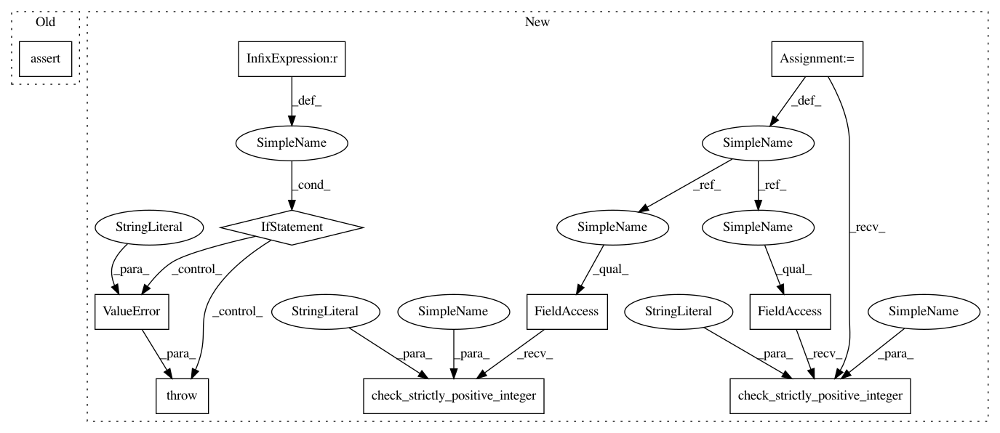

787bc79b772b527bc94d97943f15d2db54f90ac4,geomstats/geometry/grassmannian.py,GrassmannianCanonicalMetric,__init__,#GrassmannianCanonicalMetric#Any#Any#,60
Before Change
def __init__(self, n, p):
assert isinstance(n, int) and isinstance(p, int)
assert p <= n
self.n = n
self.p = p
After Change
def __init__(self, n, p):
geomstats.error.check_strictly_positive_integer(p, "p")
geomstats.error.check_strictly_positive_integer(n, "n")
if p > n:
raise ValueError("p <= n is required.")
self.n = n
self.p = p
dimension = int(p * (n - p))
In pattern: SUPERPATTERN
Frequency: 3
Non-data size: 10
Instances
Project Name: geomstats/geomstats
Commit Name: 787bc79b772b527bc94d97943f15d2db54f90ac4
Time: 2020-04-09
Author: ninamio78@gmail.com
File Name: geomstats/geometry/grassmannian.py
Class Name: GrassmannianCanonicalMetric
Method Name: __init__
Project Name: geomstats/geomstats
Commit Name: 787bc79b772b527bc94d97943f15d2db54f90ac4
Time: 2020-04-09
Author: ninamio78@gmail.com
File Name: geomstats/geometry/grassmannian.py
Class Name: Grassmannian
Method Name: __init__
Project Name: geomstats/geomstats
Commit Name: 787bc79b772b527bc94d97943f15d2db54f90ac4
Time: 2020-04-09
Author: ninamio78@gmail.com
File Name: geomstats/geometry/grassmannian.py
Class Name: GrassmannianCanonicalMetric
Method Name: __init__
Project Name: geomstats/geomstats
Commit Name: b08d59a9e90f4eb0535ee56dcd3a0cd27d02d292
Time: 2020-04-09
Author: ninamio78@gmail.com
File Name: geomstats/geometry/stiefel.py
Class Name: Stiefel
Method Name: __init__